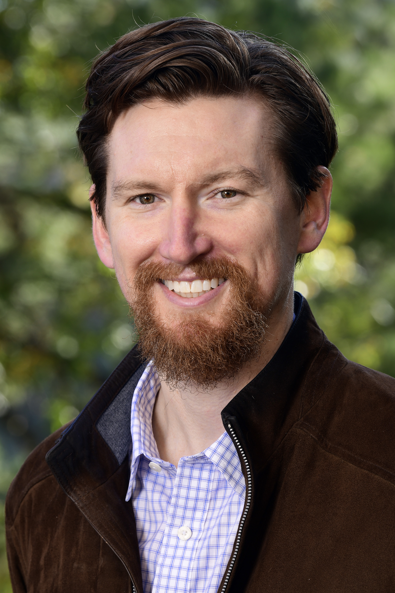
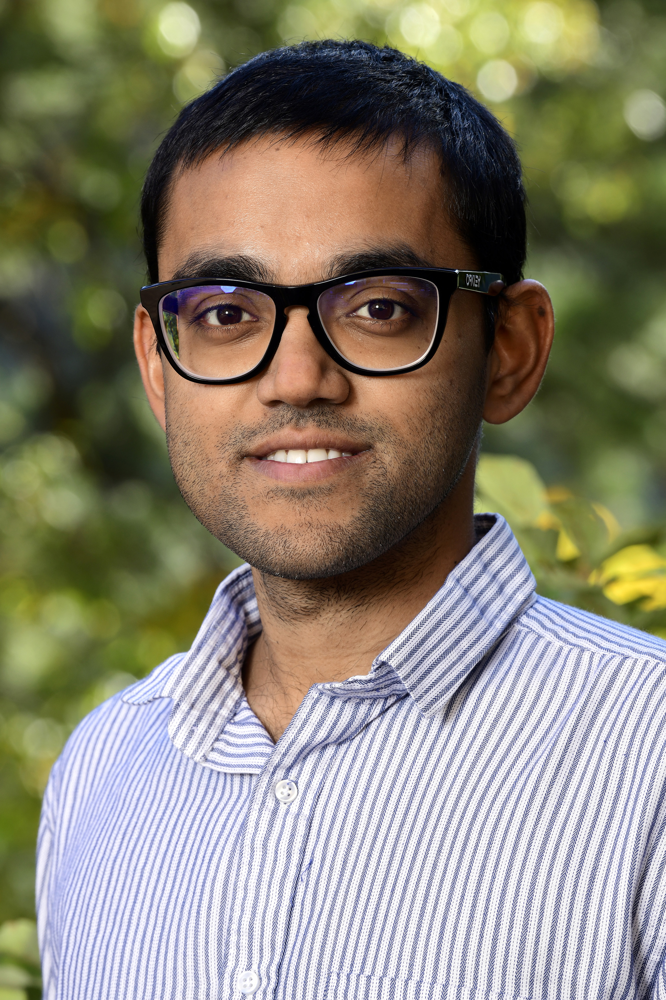
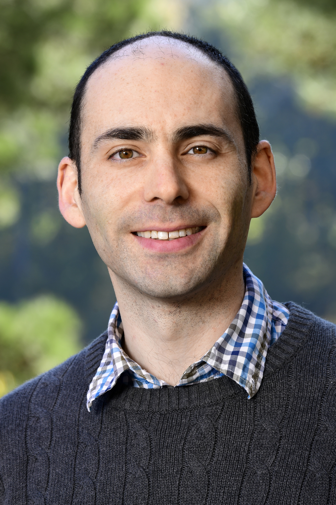

People
Group Lead
Kyle P Messier, PhD

Postdoctoral Fellows
It’s no secret that the engine driving cutting edge research across the world is postdoctoral fellows. The SET group has many talented postdoctoral fellows with a variety of backgrounds including spatial statistics, machine learning, epidemiology, atmospheric sciences, and geography.
Current fellows, alphabetically by last name:
Mariana Alifa Kassien

Ranadeep Daw

Eva Marques
Insang Song
Daniel Zilber

Data Analyst
Mitchell Manware

Former Members
Kristin Eccles, Postdoctoral Fellow, Now at Health Canada
Melissa Lowe, Postbaccalaureate Fellow, Now at Duke Cancer Institute
Taylor A Potter, Postbaccalaureate Fellow, Now in medical school at Meherry Medical College